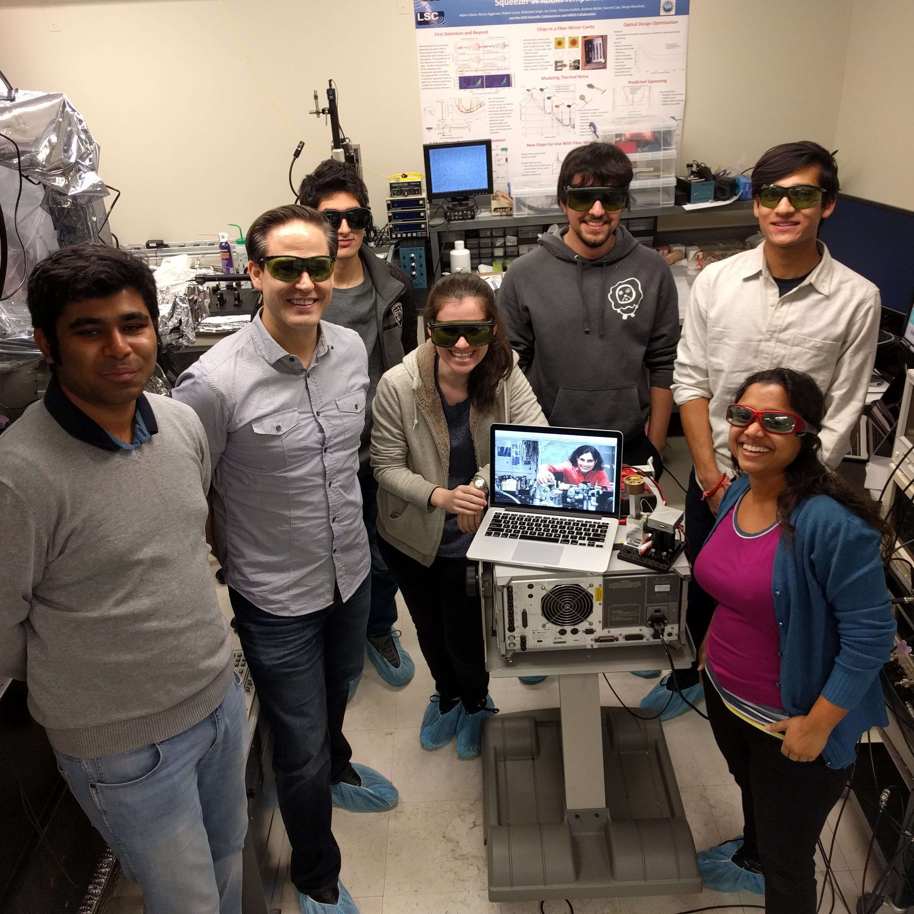

Lobbying against ICE ruling on SEVP exemption
Something about efforts to reverse ICE directiveSEE CHAS POSTER


Spring 2020 NAGPS Legislative Action Days
Something about it going online during the pandemic and issues we tackled.SEE LIGO POSTER